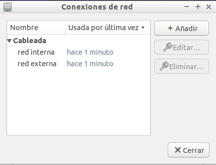
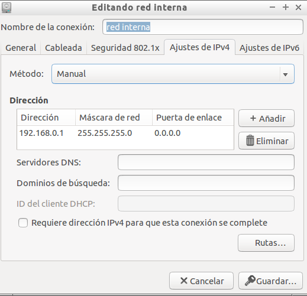
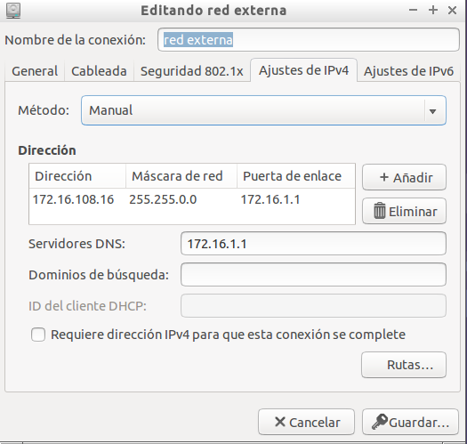
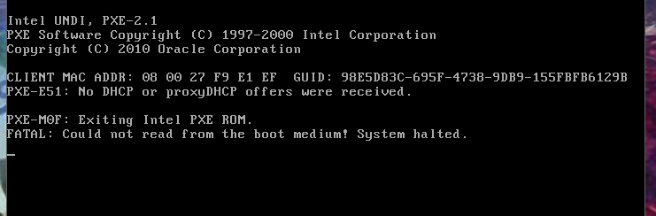
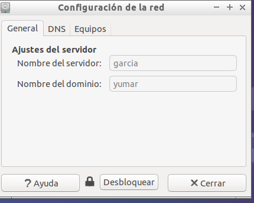

- Módulo: Administración de Sistemas Operativos
- Clientes ligeros
- Componentes del grupo: Alejandro Garcia Yumar
- Curso Académico: 2014/2015
- Fecha de entrega: 26 de Septiembre de 2014
El ejercicio consiste en instalar correctamente un servidor lubuntu para que pueda funcionar un cliente ligero.
Para que funcione se debe configurar el servidor de forma estatica con dos tarjetas de red, las dos como red interna.
  El primer problema que surgio fue el de debajo, que se cambio por el siguente cuando se instalo bien los repositorios de linux.
 